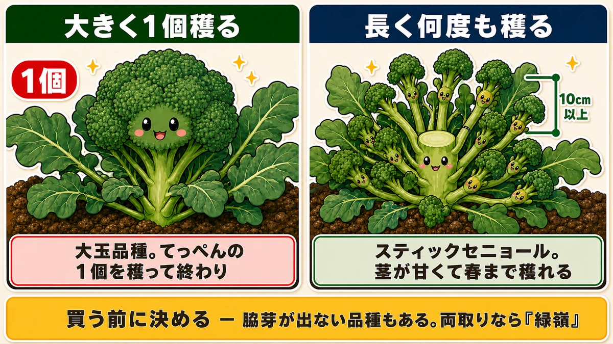
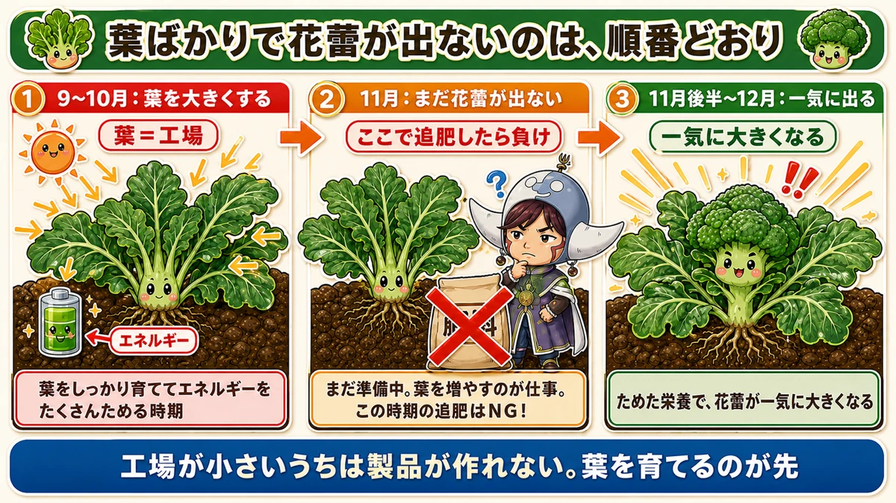
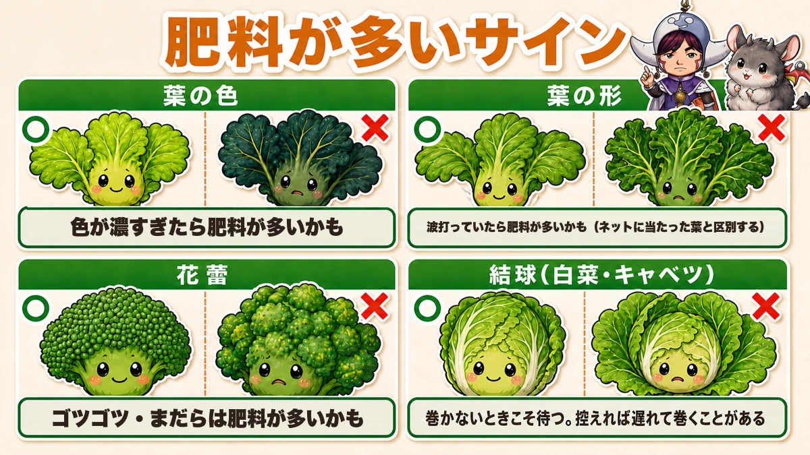
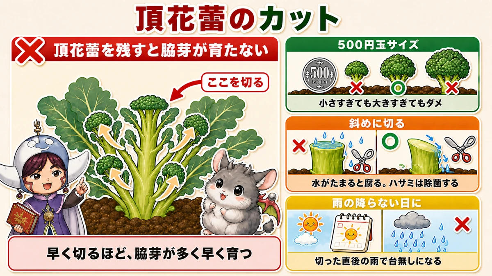
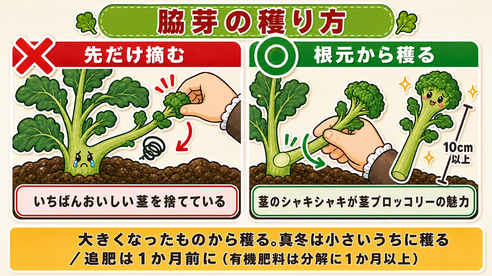
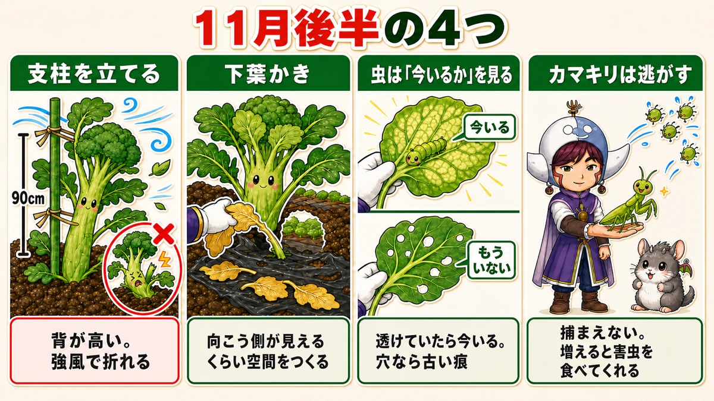

All leaves and no head is normal 🥦 Feed it now and you really will ruin it

🥦 "It's late autumn and there's still no head, just leaves."
🥦 "I'm worried — maybe I should feed it."
🥦 "I bought sprouting broccoli and only got one head off it."
Hello, I'm Eiko. Eight years of growing vegetables organically and without pesticides, and a teaching licence in science.
The headline:
All leaves and no head is normal. Feed it at that point and you really will ruin it.
Broccoli grows its leaves first and its head afterwards. The order is fixed. So a leafy plant in late autumn is working through the sequence correctly.
And this is where people think "it isn't growing" and add fertiliser. The result is overfeeding: disease, pests, and a patchy head. The saddest kind of failure — the one caused by trying to help.
I did it once. This article exists to stop you.
① The variety decides how you grow it

What this diagram says （図解の文字）
- Two ways to grow it
- One big head — "a large-headed variety. Cut the top one and that's that"
- Many pickings over a long season — "sprouting broccoli. Sweet stems, and it crops into spring"
- "Decide before you buy — some varieties don't produce side shoots"
Decide before you buy: one big head, or many pickings over a long season? It changes the variety and everything you do afterwards.
For one big head
Choose a large-headed variety. One big cluster at the top, you cut it, and you're done — the shape sold in shops.
For a long season: sprouting broccoli
Smaller heads, but side shoots come one after another. The stems are tender and sweet, rather like asparagus — that stem is my favourite part, and it's what I grow every year.
- Planted early, picking starts before the year ends
- Overwintered, it crops into spring
- Relatively resistant to pests and disease — hand-picking and netting are enough
For a first attempt I'd honestly recommend this one. The number of pickings from a single plant is in a different league.
② Planting date decides nine tenths of it

What this diagram says （図解の文字）
- All leaves and no head is the correct order
- ① "Autumn: grow the leaves" — "leaves = the factory" — "the period for building up energy"
- ② "Early winter: still no head"
- ③ Then the head swells rapidly on the stored energy
Get the plants in before the cold arrives. The reason is the sequence this vegetable follows.
40 cm apart, and check the growing point
Space them 40 cm (16 in). It's a large plant; crowded, they all end up mediocre.
When buying, look at the central growing point:
- Not shrivelled
- Not dead or broken
- No insects on it
Damage the growing point and a broccoli plant is finished. Check this one thing in the shop.
Water the hole first
Pour water into the planting hole and let it drain before setting the plant in. Plant into standing water and the roots sit in mud and establish badly. Just wait for it to sink.
First feed two weeks after planting
This is the leaf-building phase, so here you do feed.
- First feed two weeks after planting, then monthly
- 20 cm (8 in) out from the stem — 25–30 cm once large
- A trowel hole 10–15 cm (4–6 in) deep
- One tablespoon (about 30 ml) of poultry manure, in two holes either side
- Pour water in before filling it back
Without mulch film, scatter 30–40 ml in a circle 20–25 cm out and cover by drawing soil up. Do the earthing-up at the same time as feeding.
Broccoli's year, in order
- Autumn: grow big leaves and store energy
- Early winter: the cold slows growth
- Then: the head swells rapidly, on the stored energy
So autumn is the period for building the factory. Leaves are the factory, the head is the product. A small factory can't make product.
If the plant isn't big by then, it has neither the energy to fill a head nor the energy to keep throwing side shoots — and no amount of later fertiliser recovers it.
Which is why "all leaves" is normal
No visible head in late autumn is ordinary, especially with romanesco types.
What you should be looking at is the leaves, not the head. Big, healthy leaves mean everything is fine — better than fine.
Big leaves photosynthesise hard and bank energy, and then the head swells — and it really is sudden. You go out one day and there's a cluster in the middle that wasn't there before.
So look after the leaves. That's the only job right now.
③ Learn the signs of overfeeding

What this diagram says （図解の文字）
- Signs of too much fertiliser
- Leaf colour — "too dark = too much feed"
- Leaf shape — "wavy = too much feed (distinguish from leaves pressed against the netting)"
- Head — "lumpy and patchy = too much feed"
The most important part of this article. "It isn't growing, so I'll feed it" is fatal in a plot that already has plenty of fertiliser.
Why too much feed causes disease
Too much nitrogen and the plant can't make sugars properly, so the substances built from those sugars run short too.
The result is physiological disorder — symptoms with no pathogen involved — and with its defences down, it then also picks up disease and pests.
You feed it and it gets weaker. That's the counter-intuitive part.
Look at the leaves
- Unnaturally dark, moss-green colour
- Leaves rippling in waves — a healthy leaf opens out smoothly
Either of those suggests overfeeding.
One caution: leaves pressing against insect netting also curl and ripple, and that has nothing to do with fertiliser. Lift the netting and judge by a leaf that isn't touching it.
Look at the head
- The surface unusually lumpy and coarse
- Colour uneven and patchy
A good head has even beads and uniform colour. Lumpy and patchy means too much feed.
The same applies to cabbage
Same family, same reading. Wavy leaves and a loose heart suggest overfeeding — and too much feed can stop it hearting at all, because everything goes into the outer leaves and it never gets on with the job.
The hopeful part: a loose heart will often heart up late if you hold off the feeding and wait.
"It isn't hearting, so I'll feed it" is backwards. When it isn't hearting, wait.
④ Sprouting broccoli: cut the top head small, on the diagonal

What this diagram says （図解の文字）
- Cutting the top head
- "Leave the top head on and the side shoots don't develop" — "cut here"
- "The earlier you cut, the more side shoots and the sooner"
- "About the size of a large coin" — "too small or too big are both wrong"
- "Cut on the diagonal" — "so water doesn't collect"
A head forms at the centre of a sprouting broccoli too — flat, and not much of a dome. Don't grow it on. Cut it early.
Why
Leave it and the plant concentrates on it, and the side shoots — the whole point — don't develop.
"Cut it off after all that?" — I hesitated the first time too. But whether you cut it changes the total harvest several times over, and the earlier you cut, the more side shoots you get and the sooner.
Three points
1. Cut it at about the size of a large coin. Too small or too big are both wrong: let it grow and the plant spends resources on it. At coin size the piece you cut is perfectly edible, so nothing is wasted — another reason to cut early.
2. Disinfect the snips, and cut on the diagonal. A horizontal cut collects rainwater, which rots or infects it. A diagonal cut sheds it. The cut is an open wound, so dirty blades are a way in.
3. Pick a day with no rain coming. A diagonal cut is wasted if it rains straight afterwards. A clear, dry morning with another fine day forecast.
A few weeks later the side shoots come away, and that's when sprouting broccoli really starts.
⑤ Pick side shoots from the base

What this diagram says （図解の文字）
- How to pick the side shoots
- ✗ "picking only the tip" — "throwing away the best part, the stem"
- ○ "pick from the base" — "10 cm or more" — "the crisp stem is what sprouting broccoli is for"
- "Take the biggest first. In deep winter, pick them small"
A genuinely wasteful mistake: picking only the soft tip of the side shoot.
Understandable — but you're throwing away half of what makes this vegetable worth growing.
The two attractions are repeated picking into spring, and the crisp texture of that long stem — and the stem is the best part.
So take the side shoot as long as you can, from the base. Twist it and it snaps off.
When, and in what order
- Pick once it's 10 cm (4 in) or more. A plant gives a dozen or more
- Take the biggest first, so the rest get the resources
- In deep winter they don't reach that size — pick them small
Wait for all of them to get big and you never pick anything. Take what's ready and hand on to the next. That rotation is the rhythm of it.
Feed ahead of the lean months
Once picking starts, feed about monthly. Here fertiliser is correct.
And know that side shoots come poorly in deep winter — but feeding gets you one more picking in spring. The point is the lag:
Organic fertiliser takes over a month to break down. So "feed when production drops" is too late. To have it working in midwinter, put it on a month earlier.
Late-autumn jobs

What this diagram says （図解の文字）
- Four jobs for late autumn
- "Put a cane in" — 90 cm — "it's tall and snaps in strong wind"
- "Strip the lower leaves" — "open it up until you can see through"
- "With pests, ask whether they're there now" — "translucent damage means they're there now"
Stake it
Broccoli gets tall, and losing a plant this far along to wind is painful. Push a 90 cm (3 ft) cane in beside it and tie it.
It also needs a cane right after planting, against autumn storms. A plant that can't grow straight starts putting roots out of the stem, which wastes resources. Tie a little above halfway up the stem, loosely while it's young.
Plant clips save you snapping young stems with twine — use clips for the first two or three weeks, then switch to twine once the stem firms up.
And place the cane assuming netting will go over it. A cane against the netting tears it: angle it low, or push it deep enough to clear.
To sum up
- ✅ All leaves and no head is the correct order. Don't feed then
- ✅ Decide before buying: one big head, or a long season — and check it produces side shoots
- ✅ Plant before the cold, 40 cm apart, and check the growing point in the shop
- ✅ Water the hole and let it drain before planting
- ✅ Feed while the leaves grow, stop while you wait for the head
- ✅ Overfeeding shows as dark, wavy leaves and a lumpy, patchy head
- ✅ A cabbage that won't heart needs waiting, not feeding
- ✅ Sprouting broccoli: cut the top head at coin size, on the diagonal, on a dry day
- ✅ Pick side shoots from the base, 10 cm or longer, biggest first
- ✅ Feed a month before you need it — organic fertiliser is slow
- ✅ Stake it, and allow for the netting
You don't have to do all of it. If it's all leaves right now, the single best thing you can do is nothing 🥦
Thank you for reading!